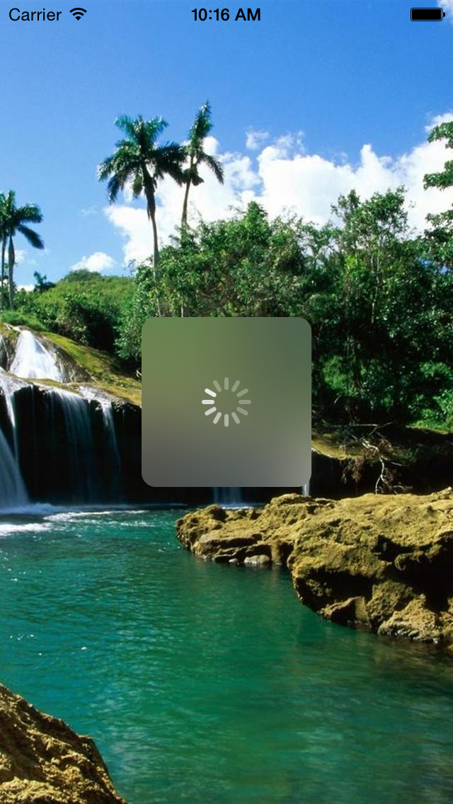
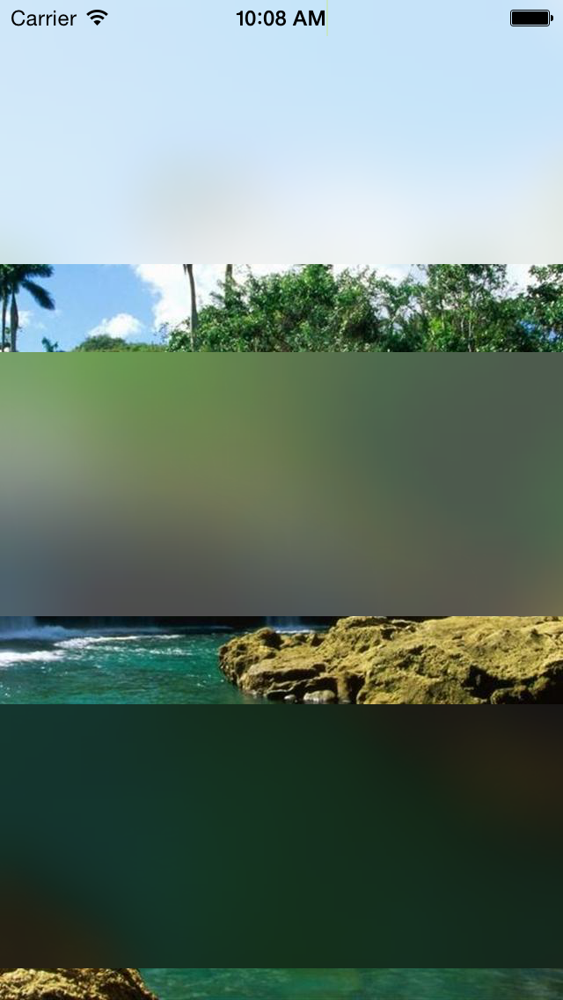

The project allows you to use UIVisualEffectsView on iOS8 (native iOS blur and vibrancy effect).  
If you are building from source you will need to do the following:
Import the project into Xcode:
~~~ TITANIUM_SDK = /Users/Artanis/Library/Application Support/Titanium/mobilesdk/osx/$(TITANIUM_SDK_VERSION) ~~~
Import the project into Eclipse:
To access this module from JavaScript, you would do the following:
var UIBlurView = require("com.artanisdesign.uivisualeffect");
The UIBlurView variable is a reference to the Module object.
Take a look on the example.js
~~~ var proxy2 = UIBlurView.createView({ effect : "light", //extralight, dark width : Ti.UI.FILL, height : 150, top : 200, left : 0 }); ~~~
It's not recommended to add view directly to the blurred view (just use it as a background layer). It's not using the UIVisualEffectsView contentView property yet. Until it's not fixed, vibrancyEffect is not available either.
Please feel to free to contribute and help me override the default "add" function.
Artanis, Gergely Cziva, info@artanisdesign.eu, Twitter: @_ artanis _
The MIT License (MIT)
Copyright (c) 2014 Gergely Cziva, Artanis
Permission is hereby granted, free of charge, to any person obtaining a copy of this software and associated documentation files (the "Software"), to deal in the Software without restriction, including without limitation the rights to use, copy, modify, merge, publish, distribute, sublicense, and/or sell copies of the Software, and to permit persons to whom the Software is furnished to do so, subject to the following conditions:
The above copyright notice and this permission notice shall be included in all copies or substantial portions of the Software.
THE SOFTWARE IS PROVIDED "AS IS", WITHOUT WARRANTY OF ANY KIND, EXPRESS OR IMPLIED, INCLUDING BUT NOT LIMITED TO THE WARRANTIES OF MERCHANTABILITY, FITNESS FOR A PARTICULAR PURPOSE AND NONINFRINGEMENT. IN NO EVENT SHALL THE AUTHORS OR COPYRIGHT HOLDERS BE LIABLE FOR ANY CLAIM, DAMAGES OR OTHER LIABILITY, WHETHER IN AN ACTION OF CONTRACT, TORT OR OTHERWISE, ARISING FROM, OUT OF OR IN CONNECTION WITH THE SOFTWARE OR THE USE OR OTHER DEALINGS IN THE SOFTWARE.